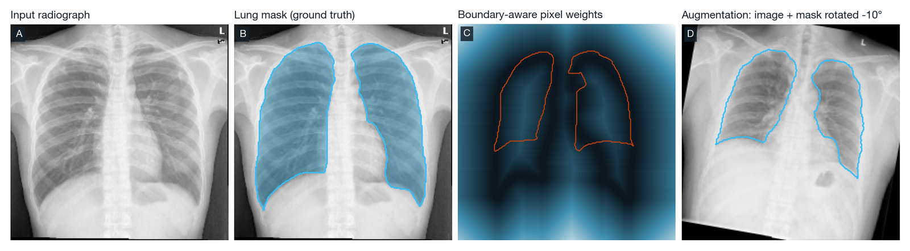
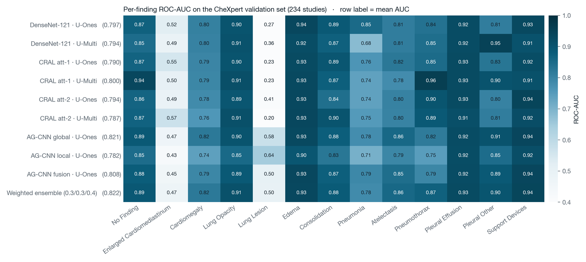
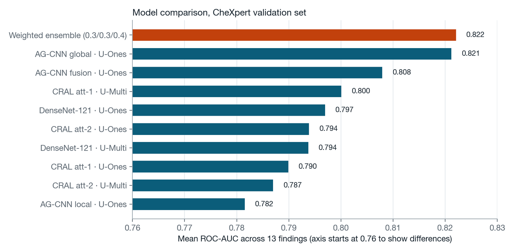

Medical imaging · Multi-task deep learning
Multi-task chest X-ray analysis
One network that segments the lungs and classifies thoracic findings, trained on a mix of a few hundred pixel-labelled images and tens of thousands of image-level labels.
The problem
Chest X-ray classifiers can score well while looking at the wrong things: text markers, support devices or how the patient was positioned. Pixel-level lung annotations would help a model attend to the right anatomy, but only about 700 public images have them, while image-level finding labels exist for tens of thousands.
I worked on multi-task models that learn segmentation and classification together, so the segmentation task shapes the shared encoder that the classifier depends on.
My contribution
- Data pipeline for partial labels. Merged a 92,028-row image-level metadata table (14 findings) with 704 Montgomery and Shenzhen lung masks and serialised everything to sharded TFRecords. Each sample carries flags saying which tasks it has labels for, so batches can mix fully and partially labelled images.
- Boundary-aware loss weights. Computed a weight map per mask, using a morphological gradient followed by an L1 distance transform, so the segmentation loss can emphasise lung contours.
- Architectures. A DenseNet-121 encoder with a U-Net decoder (Dice loss), and a lighter MobileNet with classification, segmentation and reconstruction heads. I explored learnable uncertainty weighting between the losses.
- Benchmarking. Compared DenseNet-121, CRAL attention and AG-CNN variants under two CheXpert uncertainty-label policies, and built a weighted ensemble.

Data and methods
| Data | Used for | Size (as executed) |
|---|---|---|
| Merged CXR metadata, 14 findings | Classification labels | 34,898 samples → 27,918 train / 3,490 val / 3,490 test |
| Montgomery + Shenzhen lung masks | Segmentation labels and boundary weights | 704 masks, 224 × 224 |
| Shenzhen TB subset | MobileNet multi-task experiment | 452 training images (904 after rotation), 80/20 split |
| CheXpert validation set | Held-out model comparison | 234 studies, 13 findings with positive cases |
Images resized to 224 × 224 and normalised with ImageNet statistics; Adam optimiser; checkpointing and learning-rate reduction on plateau. All datasets are public and are not redistributed.
Results


| Model | Mean ROC-AUC | Evaluated on |
|---|---|---|
| Weighted ensemble: 0.3 CRAL att-1 + 0.3 CRAL att-2 (U-Multi) + 0.4 AG-CNN global | 0.822 | CheXpert validation, 234 studies, 13 findings |
| AG-CNN, global branch (U-Ones) | 0.821 | same |
| DenseNet-121 baseline (U-Ones) | 0.797 | same |
ROC-AUC is computed per finding with scikit-learn and averaged without weighting. Ensemble weights were set by hand, not tuned on this set. No confidence intervals were computed; with 234 studies, gaps of about 0.01 are within noise.
Limitations
- Segmentation Dice scores are not recorded in these notebooks, so none are reported here.
- While preparing this portfolio I found that the MobileNet Grad-CAM cell uses the ImageNet classifier head instead of the trained model. Its heatmap is therefore not shown as evidence. The fix is documented in the repository.
- The comparison is on one small validation split. Patient-level cross-validation with bootstrap confidence intervals would be the next step.